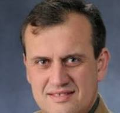

Atanas G. Stefanov
Professor · Department of Mathematics · University of Alabama at Birmingham
I am a Professor in the Department of Mathematics at the University of Alabama at Birmingham (UAB). My research is in the analysis of partial differential equations, in particular soliton and near-soliton dynamics, local and global behavior of dispersive PDE, and asymptotics for dissipative PDE.
Before joining UAB in 2021, I was a Professor in the Department of Mathematics at the University of Kansas. I received my Ph.D. in Mathematics from the University of Missouri in 1999.
Appointments
| 2021 – present | Professor, University of Alabama at Birmingham |
| 2012 – 2021 | Professor, University of Kansas |
| 2007 – 2012 | Associate Professor, University of Kansas |
| 2002 – 2007 | Assistant Professor, University of Kansas |
| 2000 – 2002 | Visiting Assistant Professor, University of Massachusetts Amherst |
| 1999 – 2000 | Postdoctoral Fellow, Syracuse University |
Research
My interests lie in the analysis of partial differential equations:
- Soliton dynamics — linear and nonlinear stability of solitary waves in dispersive models, asymptotic stability; solitary waves in spatially discrete systems.
- Dispersive PDE — local and global behavior of nonlinear Schrödinger, wave, Klein–Gordon, Dirac, KdV, Ostrovsky and Whitham models.
- Dissipative PDE — well-posedness, regularity and sharp asymptotics for fluid models such as the Boussinesq system and the quasi-geostrophic equation.
A complete list of publications is in my CV.
Recent publications
- V. Iyer, R. Parker, A. G. Stefanov, Existence and stability for traveling waves of fourth order semilinear wave and Schrödinger equations. Submitted. arXiv
- M. Arnesen, M. Ehrnström, A. G. Stefanov, A maximisation technique for solitary waves: the case of the non-locally dispersive Whitham equation. Arch. Ration. Mech. Anal. 248 (2024), no. 3, Paper No. 53. arXiv
- B. Isom, D. Mantzavinos, A. G. Stefanov, Growth bound and nonlinear smoothing for the periodic derivative nonlinear Schrödinger equation. Math. Ann. 388 (2024), 2289–2329. arXiv
- A. Ramadan, A. G. Stefanov, On the stability of solitary waves in the NLS system of the third-harmonic generation. Anal. Math. Phys. 14 (2024), no. 1, Paper No. 4. arXiv
- T. Gou, H. Hajaiej, A. G. Stefanov, On the solitary waves for anisotropic nonlinear Schrödinger models on the plane. Eur. J. Math. 9 (2023), no. 3, 55. arXiv
- S. Hakkaev, A. Ramadan, A. G. Stefanov, On the stability of the compacton waves for the degenerate KdV and NLS models. Quart. Appl. Math. 80 (2022), no. 3, 507–528. arXiv
- S. Hakkaev, M. Stanislavova, A. G. Stefanov, On the stability of the periodic waves for the Benney system. SIAM J. Appl. Dyn. Syst. 21 (2022), no. 3, 1726–1747. arXiv
- A. G. Stefanov, G. Tsolias, J. Cuevas-Maraver, P. G. Kevrekidis, Mixed dispersion nonlinear Schrödinger equation in higher dimensions: theoretical analysis and numerical computations. J. Phys. A 55 (2022), no. 26, Paper No. 265701. arXiv
- H. Hajaiej, A. G. Stefanov, On the instability of the Ruf–Sani solitons for the NLS with exponential nonlinearity. Appl. Math. Lett. 130 (2022), Paper No. 107988. arXiv
- S. Oh, A. G. Stefanov, Smoothing and growth bound of periodic generalized Korteweg–de Vries equation. J. Hyperbolic Differ. Equ. 18 (2021), no. 4, 899–930. arXiv
Selected publications
- S. Hakkaev, M. Stanislavova, A. G. Stefanov, Existence and stability for the travelling waves of the Benjamin equation. Nonlinearity 38 (2025), 025020.
- A. G. Stefanov, R. M. Ross, P. G. Kevrekidis, Ground states in spatially discrete non-linear Schrödinger lattices. Nonlinearity 36 (2023), no. 8, 4053–4085. PDF
- S. Hakkaev, M. Stanislavova, A. G. Stefanov, On the stability of periodic waves for the cubic derivative NLS and the quintic NLS. J. Nonlinear Sci. 31 (2021), no. 54. arXiv
- A. G. Stefanov, On the normalized ground states of second order PDE's with mixed power non-linearities. Comm. Math. Phys. 369 (2019), no. 3, 929–971.
- A. Comech, T. V. Phan, A. G. Stefanov, Asymptotic stability of solitary waves in generalized Gross–Neveu model. Ann. Inst. H. Poincaré Anal. Non Linéaire 34 (2017), no. 1, 157–196.
- M. Stanislavova, A. G. Stefanov, On the spectral problem Lu = λu′ and applications. Comm. Math. Phys. 343 (2016), no. 2, 361–391.
- A. G. Stefanov, P. G. Kevrekidis, On the existence of solitary traveling waves for generalized Hertzian chains. J. Nonlinear Sci. 22 (2012), no. 3, 327–349.
- A. G. Stefanov, P. G. Kevrekidis, Asymptotic behavior of small solutions for the discrete nonlinear Schrödinger and Klein–Gordon equations. Nonlinearity 18 (2005), 1841–1857.
- A. Nahmod, A. G. Stefanov, K. Uhlenbeck, On the well-posedness of the wave map problem in high dimensions. Comm. Anal. Geom. 11 (2003), 49–83.
- A. Nahmod, A. G. Stefanov, K. Uhlenbeck, On Schrödinger maps. Comm. Pure Appl. Math. 56 (2003), 114–151; Erratum: Comm. Pure Appl. Math. 57 (2004), 833–839.
Teaching
Graduate courses
Mathematical Analysis I, II · Measure Theory · Complex Analysis · Functional Analysis I, II · Fourier Analysis and PDE · Advanced PDE
Undergraduate courses
Calculus I, II, III · Linear Algebra · Elementary ODE · Calculus of Variations · Applied PDE
Teaching awards
- Max Wells Teaching Award, University of Kansas, 2019
- G. Baley Price Teaching Award (KU Mathematics Graduate Student Association), 2018
Ph.D. Students
Current students
- Malihe Farziharomi, University of Alabama at Birmingham
- Muhammad Saqib, University of Alabama at Birmingham
Former students
Curriculum Vitae
My full CV, including the complete publication list, grants and invited talks.
Download CV (PDF)